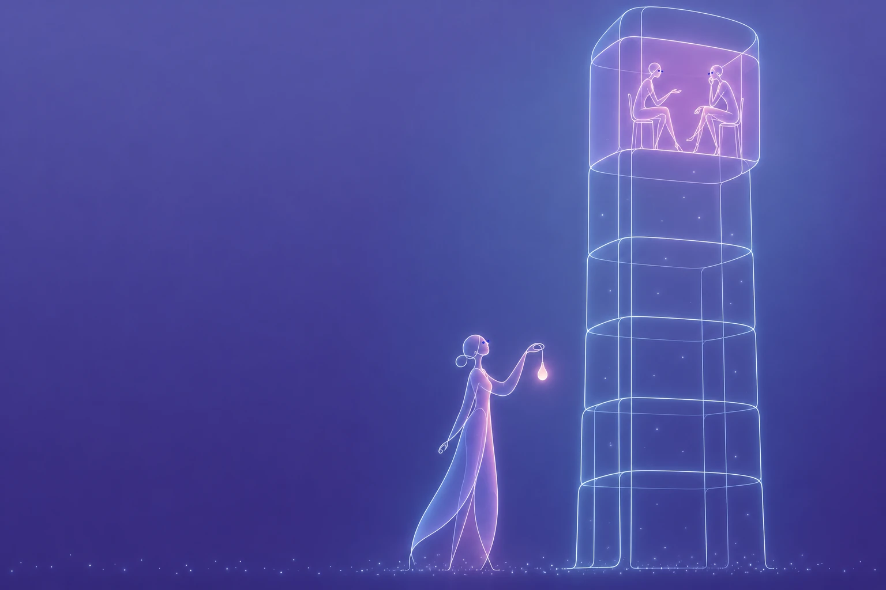
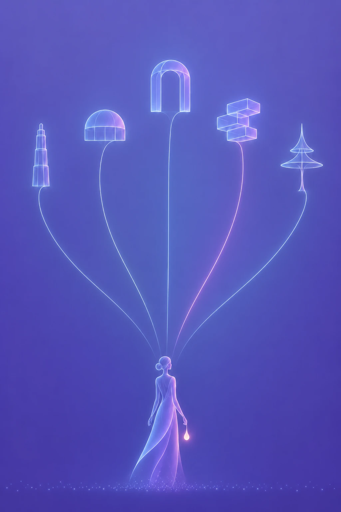

Căn phòng trên tầng caoThe room on the high floor
Tư duy tương laiFutures thinking
Ngôi nhà của tôi có một căn phòng nằm trên tầng cao. Lên tới đây, ta ngồi xuống bên cửa sổ và trò chuyện về những tương lai còn chưa thành hình. My house keeps a room on a high floor. Up here we sit by the window and talk about futures that have yet to take shape.
Tư duy tương lai là gìWhat futures thinking is
Tư duy tương lai là cách luyện cho tâm trí nhìn xa hơn tầm mắt quen thuộc. Ta hình dung thế giới của mười năm tới với đủ chi tiết để cảm nhận được nó, rồi quay về hôm nay với những lựa chọn sáng suốt hơn. Futures thinking trains the mind to see farther than its habitual horizon. We imagine the world ten years from now in enough detail to feel it, then return to today with wiser choices.
Trong tiếng Anh, người ta viết futures với chữ s ở cuối, vì phía trước luôn mở ra nhiều ngả cùng lúc. Người thực hành nhìn mọi ngả ấy bằng con mắt bình tĩnh: ngả đáng mong, ngả đáng lo, và cả những ngả hôm nay nghe còn kỳ lạ. The word carries an s because what lies ahead always opens in several directions at once. A practitioner looks at all of them with a steady eye: the hoped for, the feared, and the ones that still sound strange today.
-
Lắng nghe tín hiệuListening for signals
Tương lai gửi tin về từ rất sớm, qua những điều nhỏ bé và lạ lùng đang xảy ra ở đâu đó. Nhà văn William Gibson đã nói điều ấy thật gọn.The future sends word early, through small and strange things already happening somewhere. The writer William Gibson said it best.
The future is already here, it’s just not very evenly distributed.William Gibson
-
Lật ngược điều hiển nhiênFlipping the facts
Ta chọn lấy một điều hôm nay ai cũng coi là bất di bất dịch, rồi thử sống trong thế giới nơi điều ấy đã đổi khác.We take something everyone treats as fixed today, and try living in a world where it has changed.
-
Đi dạo qua nhiều kịch bảnWalking through scenarios
Cùng một hôm nay có thể dẫn tới tăng trưởng, tới giới hạn, tới sụp đổ, hay tới chuyển hoá. Ai đã đi dạo trước qua từng kịch bản sẽ vững vàng hơn khi một kịch bản thành sự thật.The same present can lead to growth, to constraint, to collapse, or to transformation. Whoever has already walked through each scenario stands steadier when a scenario comes true.

Vì sao là lúc nàyWhy now
Thế giới đang đổi thay nhanh hơn sức tưởng tượng của phần đông chúng ta. Trí tuệ nhân tạo bước vào từng công việc, khí hậu vẽ lại bản đồ nơi con người sinh sống, y sinh học kéo dài tuổi thọ và mở lại câu hỏi thế nào là trọn một đời người. The world is changing faster than most of us can imagine. Artificial intelligence is entering every kind of work, the climate is redrawing the map of where people can live, and biomedicine is extending lifespans and reopening the question of what a full human life is.
Những năm vừa qua cho ta thấy điều tưởng như viễn tưởng có thể thành tin tức buổi sáng. Khi một điều chưa từng được hình dung ập tới, tâm trí dễ đóng băng trong cú sốc. Khi điều ấy đã được tưởng tượng từ trước, ta nhận ra nó sớm hơn, giữ được bình tĩnh và còn khoảng rộng để lựa chọn. Recent years have shown that what sounded like fiction can become the morning news. When something never imagined arrives, the mind tends to freeze in shock. When it has been imagined beforehand, we recognise it sooner, stay calm, and still have room to choose.
Vì vậy, tư duy tương lai cũng là một cách chăm sóc tâm trí. Nó trao cho mỗi người cảm giác mình có phần trong việc định hình ngày mai, và trao cho gia đình, tổ chức, cộng đồng một ngôn ngữ chung để cùng nhau chuẩn bị. This makes futures thinking a way of caring for the mind as well. It gives each person the sense of having a hand in shaping tomorrow, and gives families, organisations and communities a shared language for preparing together.
Người giữ căn phòngThe keeper of this room
Tôi là Vũ Phi Yên, một futurist, đồng thời là nhà tâm lý lâm sàng và người dẫn dắt người lớn học tập. Tôi đã hoàn thành chương trình Futures Thinking Specialization của Institute for the Future, nơi tôi được học cùng Jane McGonigal, tác giả cuốn Imaginable. I am Vũ Phi Yên, a futurist, a clinical psychologist and an educator of adults. I completed the Futures Thinking Specialization of the Institute for the Future, where I studied with Jane McGonigal, author of Imaginable.
Tôi mang tư duy tương lai về gần với tâm lý học: nhìn xa để tâm trí kịp chuẩn bị, và để mỗi người tìm thấy phần việc của mình giữa những đổi thay lớn. Thỉnh thoảng tôi mời vài người bạn lên căn phòng này. Chúng tôi pha trà, nhìn ra cửa sổ và trò chuyện về những ngày chưa tới. I bring futures thinking close to psychology: looking far ahead so the mind has time to prepare, and so each person can find their own part in the great changes. Now and then I invite a few friends up to this room. We make tea, look out of the window and talk about days that have yet to come.
- Futures Thinking SpecializationInstitute for the Future, trên Coursera. Giảng viên: Jane McGonigal.Institute for the Future, on Coursera. Taught by Jane McGonigal.
- Tiến sĩ Di truyền Y họcPhD, Medical GeneticsNền khoa học cho cách nhìn hệ thống và dài hạn.The scientific ground for a long, systemic view.
- Thạc sĩ Tâm lý học lâm sàngMA, Clinical PsychologyNhiều năm tham vấn và dẫn dắt người lớn học tập.Years of counselling and of guiding adult learners.
- Tác giả sách Mô hình Xoắn độngAuthor of Mô hình Xoắn độngCuốn sách tiếng Việt về Spiral Dynamics.A Vietnamese book on Spiral Dynamics.
Hẹn gặp bạn ở tương lai do chúng ta cùng tạo ra.See you in the future we create together.
VŨ PHI YÊN